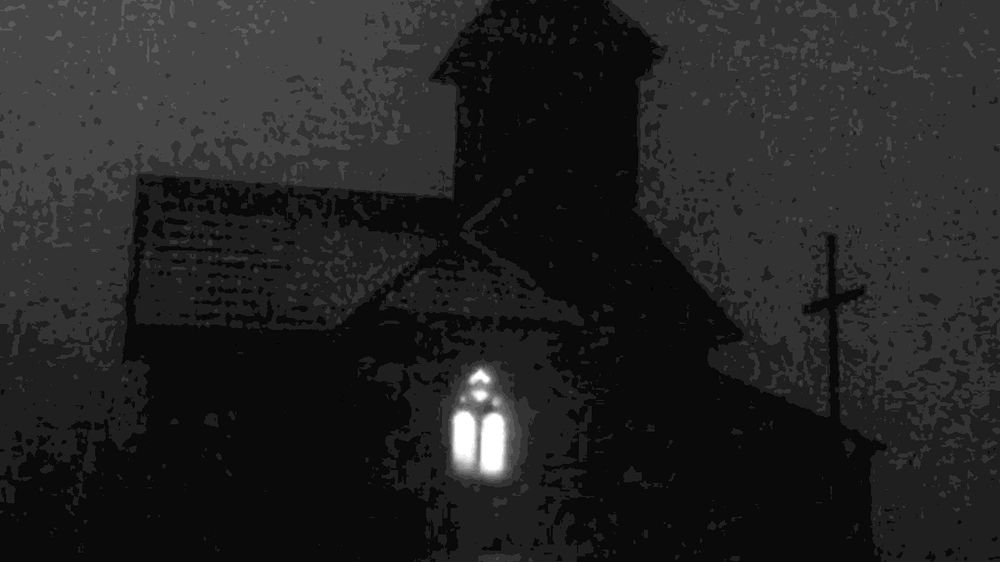
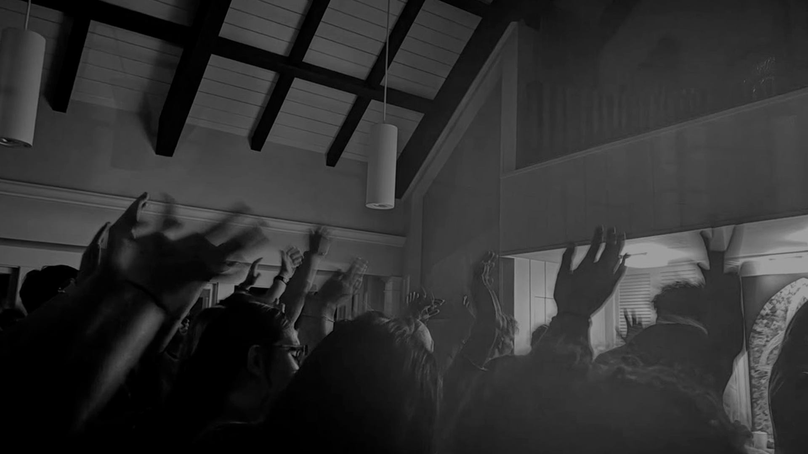

Há sempre espaço para mais uma luz.
Um lugar de acolhimento, fé e comunhão. Aqui, cada pessoa encontra espaço para recomeçar, descobrir seu propósito e caminhar ao lado de uma comunidade.
É BOM TER VOCÊ AQUI
Um coração aberto sempre encontra um lar.
A Assembleia de Santo Dédalo nasceu do desejo de construir um espaço onde a fé pudesse ser compartilhada com simplicidade. Acreditamos na força dos encontros, no cuidado com o próximo e na beleza de caminhar lado a lado.
Não importa de onde você vem ou o que procura. Há um lugar reservado para você.
Conheça nossa história
CAMINHE CONOSCO
Pequenos gestos. Grandes transformações.
Em cada encontro, renovamos nossos laços e fortalecemos aquilo que nos une. Nossa porta está aberta para quem deseja conhecer, ouvir e compartilhar.